Submarine Gen I: Amy (2015-2016)
Amy: Humble beginnings
In the fall of 2014, me and a friend who lived in the dorm across mine convinced the dean of engineering at the University of Waterloo to fund our efforts of making a human powered submarine and take it racing agaisnt other engineering schools around the world. At the time we were both freshmen and had next to no clue what we were doing.
Amy was our first submarine, which competed in the European International Submarine Races in Gosport, UK in the summer of 2016.
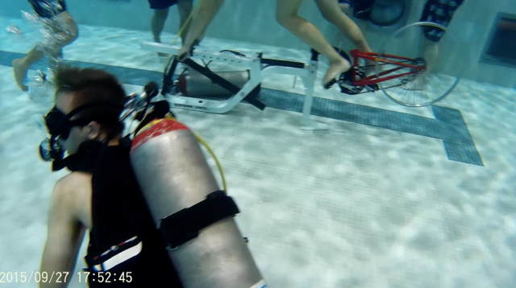
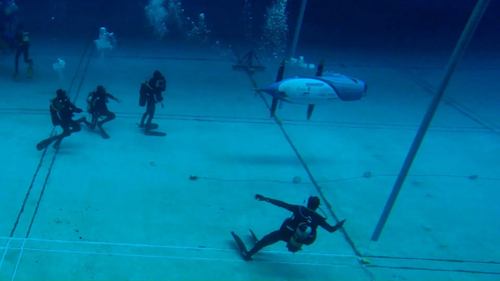
In hindsight I can say that building a race submarine is not much different than building any other product: you need to recruit a team, figure out how to fund it, carefully plan and execute a development project, test it a bunch, spend time on sales & marketing to gain momentum, and finally ship it!
Luckily for us, the same pitch we used on the dean also worked out pretty well in terms of recruiting: There are a bunch of engineering student teams at school but they are all building some sort of race car, join us, we build submarines! And so from the start we had more people available than we knew what to do with (this led to two extra problems we did not forecast: 1. Management and task allocation, and 2. Filtering talent).
To address the management issue, we recruited senior members: school professors as advisors and senior students as system leads. For multiple reasons, this did not work, and so we ended up narrowing down the team to a handful enthusiastic students who were willing to try just about anything in order to succeed.
Similarly with the filtering talent problem, our first reaction was to recruit only students with demonstrated skills. Again, this did not work, and we ended up striking a balance. You do need to realize that this was a student team -meaning students were spending their free time to work on this- so building a social aspect and enjoyable atmosphere was key for the long term success of the team (you can push people during crunch time, but that won’t work throughout the term).
Turns out you cannot just recruit students and tell them to go build a submarine, no one really knew what a human powered submarine would look like back then. We spent months going back and forth in brainstorming sessions, and reading design reports of other schools for inspiration. At this time we also started training our team of engineers to become divers (you do need to be a certified SCUBA diver to compete) and we built our first project: the HOT (human output test) model. It was a gym bench bolted onto a bike, which we would take underwater and have all our divers pedal on so we could asses who the fittest diver -and hence pilot- would be.
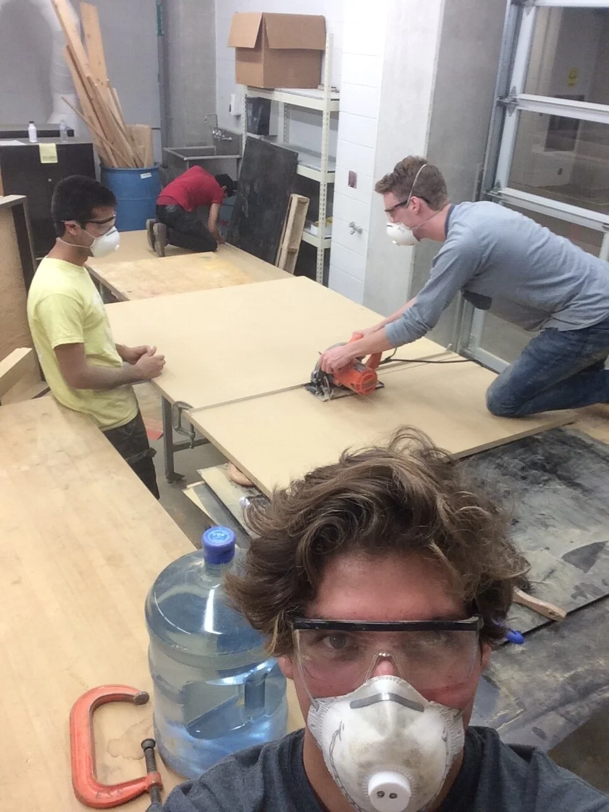
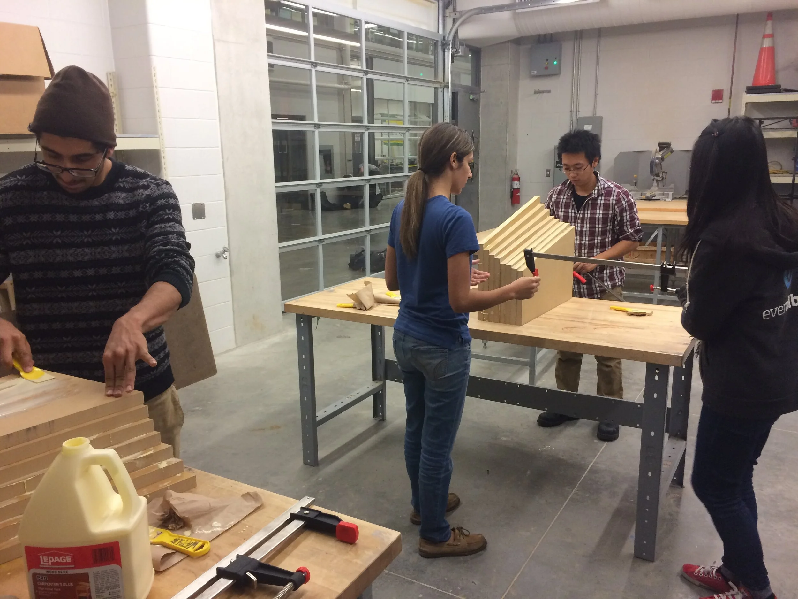
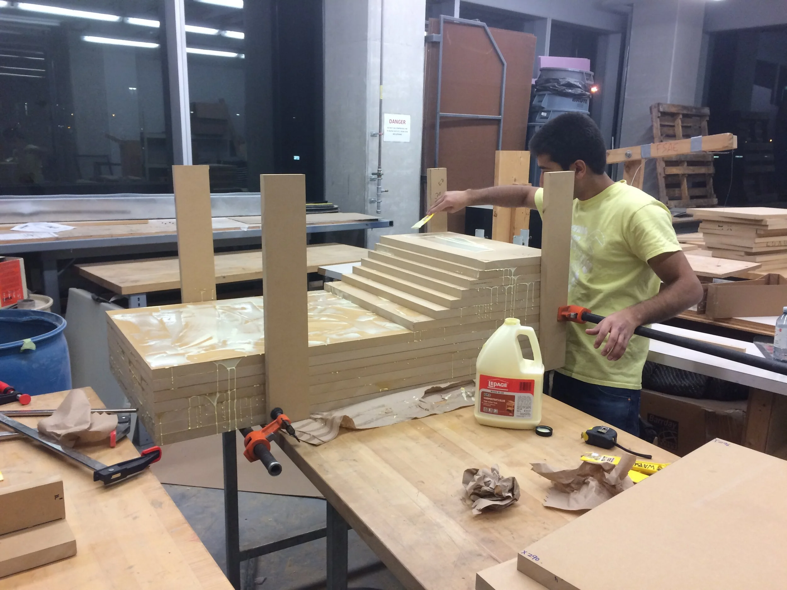
After much deliberation of what a human powered race submarine looks like, we settled on a shape that looked somewhat hydrodynamic, and was also large enough to fit a person plus the rest of the components we would need (we didn’t know it back then, but packaging a person would become one of the most contested topics for the team when designing future submarines).
Because making the hull of the submarine would take significantly longer to fabricate than any other component, we decided to get started on it before the design of everything else was finalized (a calculated risk). We pulled the trigger on a 4 digit purchase order for MDF, we bought over one tonne of it to fabricate a single female mould. By then we had raised enough funding such that we could afford the material, but we could not afford any routing or CNC machine time. We cut MDF panels close to the final surface of the mould to save machining time plus struck a deal with a local CNC shop: we will put your logo on the submarine and clean your machines if you machine this for free! In hindsight I’m surprised my friends agreed to wake up at 5AM to go clean MDF dust off a machine.
Oh and yeah, one tonne of MDF was as heavy as it sounds. It became immediately obvious that we had neglected the total mass of this mould. This lead to multiple issues down the road: transportation from campus to the machine shop was an odyssey, and moving the mould around campus was nearly impossible (specially once it was all glued together, we originally got it machined in 5 separate pieces so it would fit in the CNC).
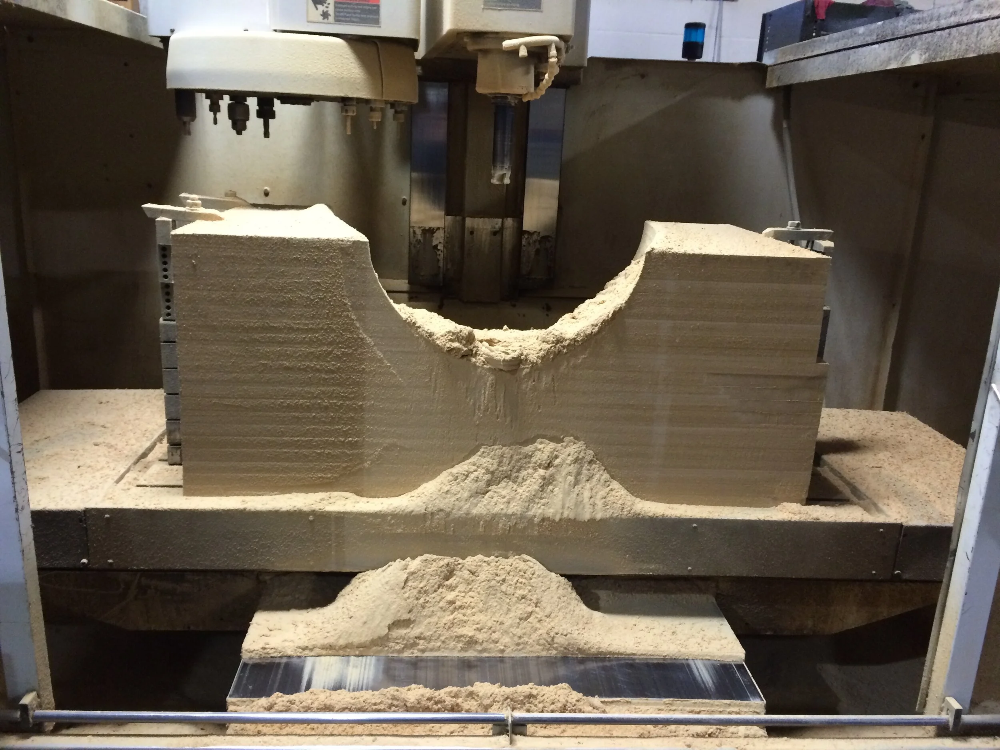
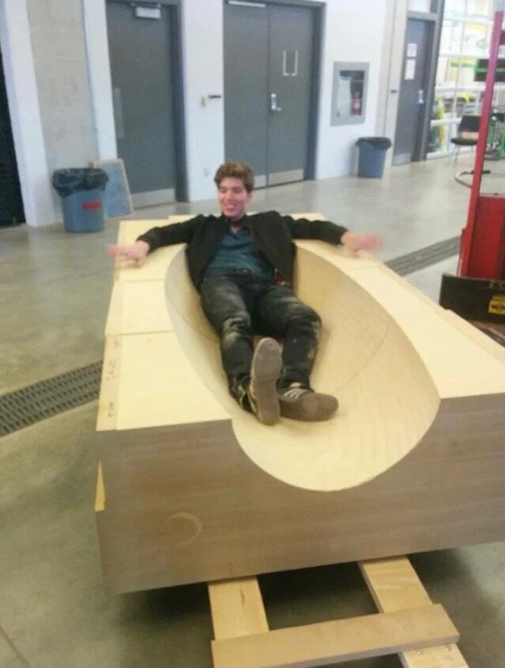
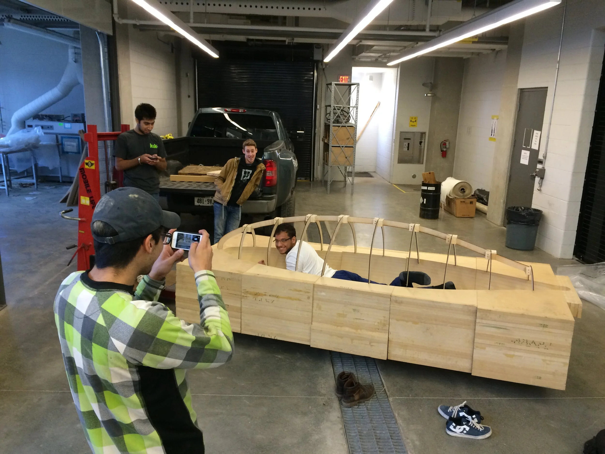
Putting the mould together was the first big win for the team. We had not win a race, we didn’t have a submarine, but suddenly it all seemed more real. In hindsight we should have been building in public and posting all of this journey on social media in real time (this is a technique I finessed in future endeavours and would highly recommend to any hardware builders).
With no time to lose, we got to work on sealing and preparing the mould for the layups. This was around late November 2015 and with finals around the corner we starting facing shortages in manpower.
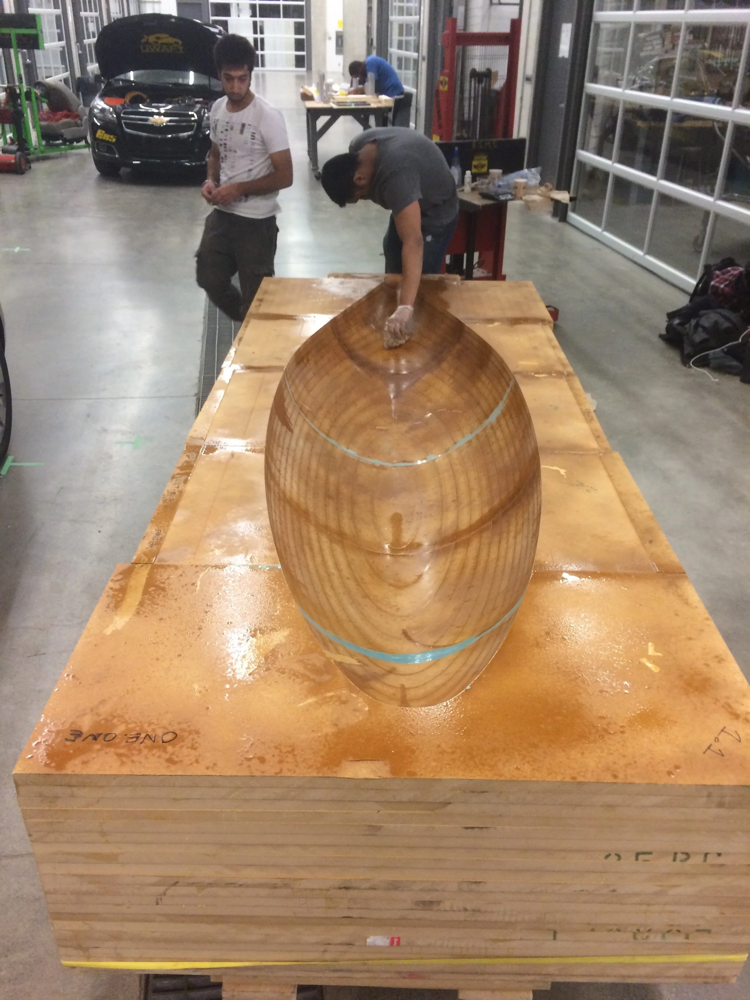
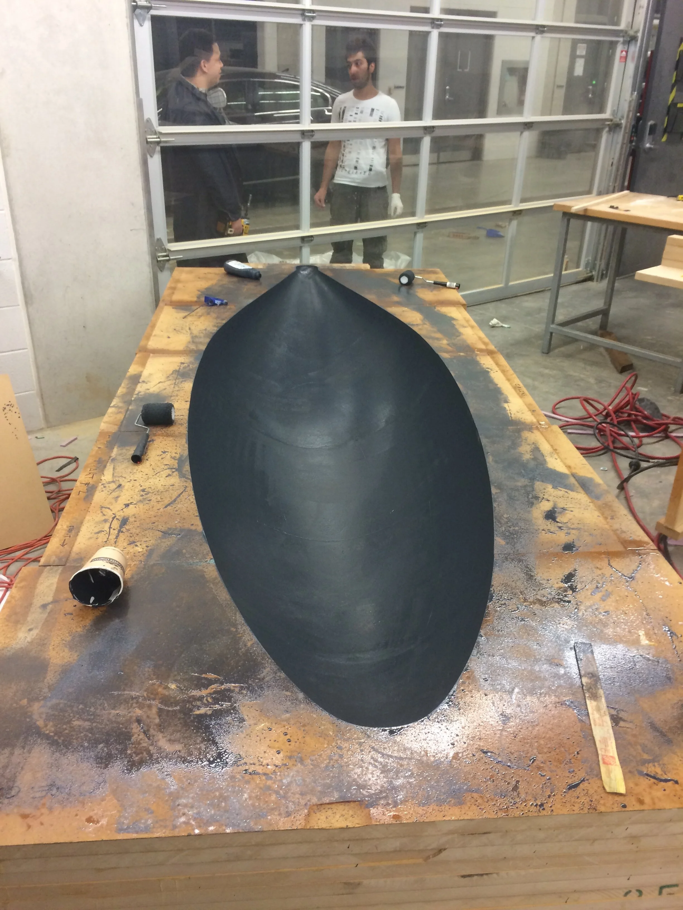
Because MDF is porous, it must be sealed before doing a layup on it (else it will absorb any resin system that you use, and also not hold vacuum). For this we used a coat of epoxy, while filling the part lines between the different mould sections, and polishing the layer of epoxy once cured. On top of it we applied a polyurethane primer coat to increase the surface finish quality and ultimately the yield a better final part. As per the pictures, the application of primers was done with a roller, less than ideal but back then we did not have an air gun (or the awareness to know we needed one).
The hull shape was axially symmetric such that we could use a single mould for both halves of the submarine, this was done to simplify and cost down fabrication, as well as to keep a neutral coefficient of moment on the submarine. Something not shown on the pictures is that the two halves would be bonded together via a flange, the flange surface was added later to the mould by screwing plywood panels all around it.
The hull was made of spread tow carbon fibre for no particular reason other than we landed TeXtreme (the Swedish carbon fibre manufacturer) as a sponsor. You could say we were pretty persuasive. We would reinforce it with polyurethane foam core along key areas, which would also grant us some possibilities regarding buoyancy and managing the centre of buoyancy of the vehicle (ballasting and achieving neutral buoyancy is a huge part of building a submarine). Despite this being the first time we were fabricating a composites part this large, we chose a vacuum assisted infusion process for surface finish reasons, and felt fairly confident on our ability to pull it off given our previous experience manufacturing wings for the Formula SAE race car in our school.
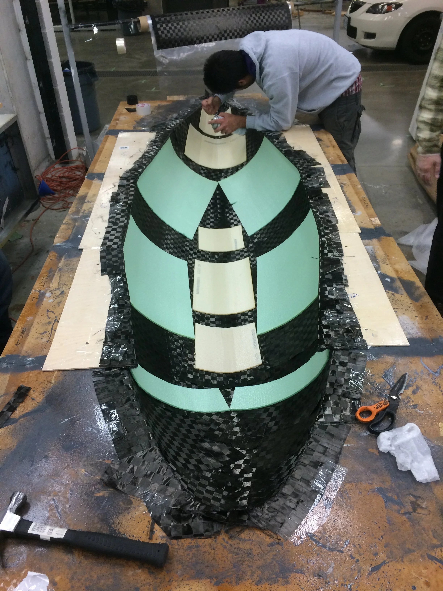
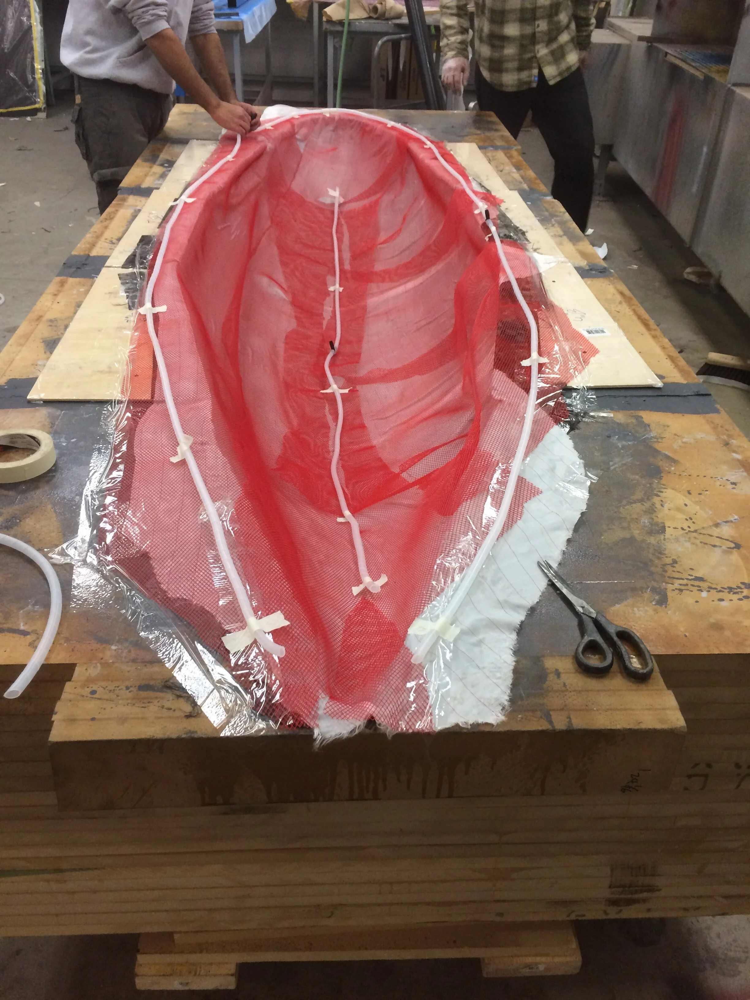
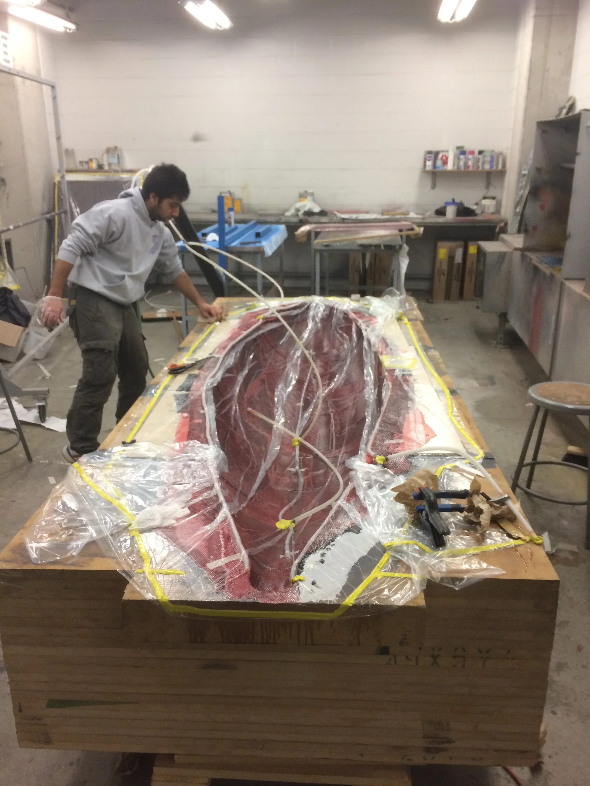
The layup process was a rollercoaster, we had to deal with multiple last minute issues (mould vacuum leaks, material shortages, a small fire, etc) and at times it seemed like the parts would have to get scrapped, but all things considered it turnt out pretty good. Something that still seems crazy to me is that this last infusion was done at 3AM on December 23rd, 2015 as per the picture timestamps. The team was running on fumes and passion by then. Why the crunch? Well, the race was only months away and we had to ship the submarine all the way to Europe, plus a bunch of the team was going to be flying away for a while to do internships during the start of 2016. It was now or never.
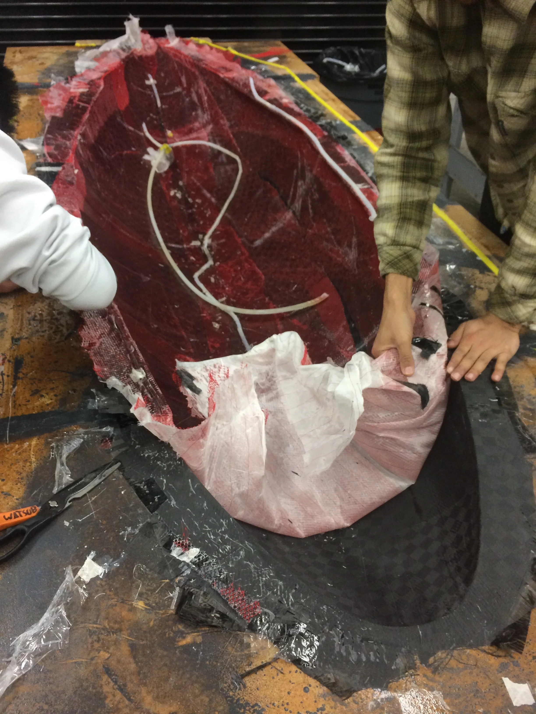
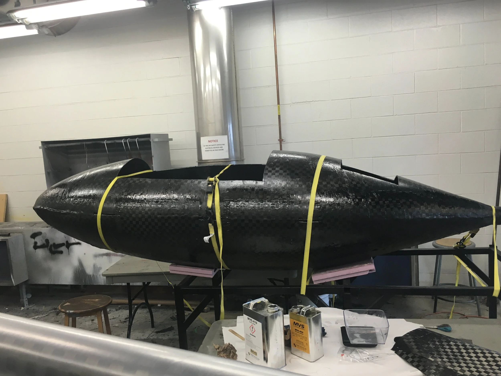
With the hull mostly taken care of we shifted our attention to the rest of the submarine: the controls, propulsion, and life support systems, while sprinting to get it all done in time to start testing (we had to book a huge pool for testing and that was expensive, so it was always a big deal to go testing in the pool). Something that still upsets me to this day is how non-straight the hatch cutouts were, one of many rookie mistakes.
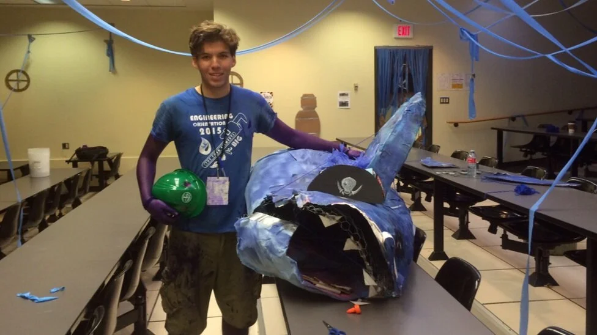
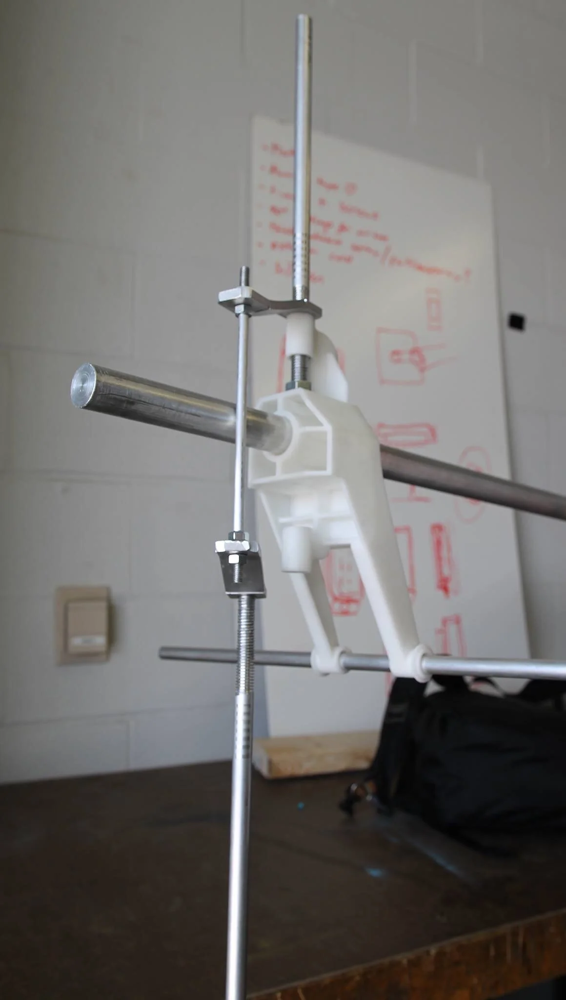
As the team continued to make progress in building our first submarine (and arguably Ontario’s first human powered submarine) we also continued to gain traction with sponsors. Above you can see the 3D printed SLS nylon control system hub. An unnecessarily complicated and expensive part that reduced the part count of our control systems significantly, just because we can. Of course nylon needs to be sealed as it absorbs humidity, we used epoxy for it. At the end of the day, part of going to an international engineering competition is showing off.
That year for Orientation week I also built a giant shark that we would walk around campus, it was a great recruiting tool! But really it was a symptom of being all in on building submarines, there was no time to think about anything else other than underwater beings.
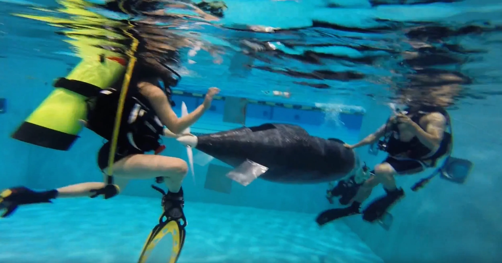
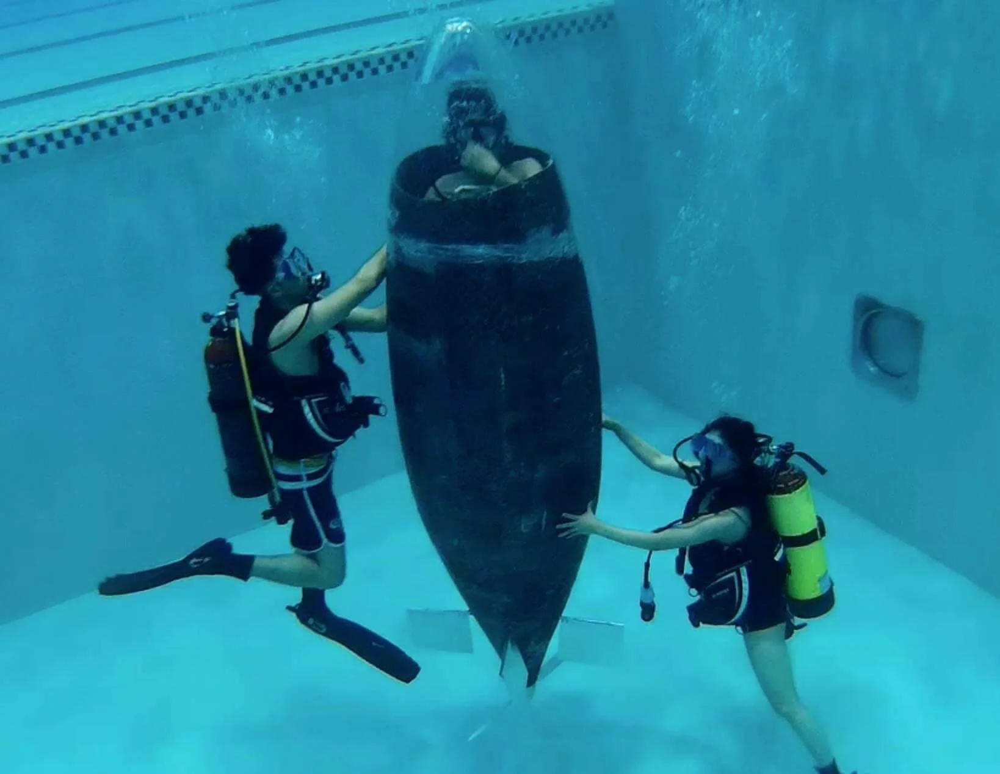
Only days after putting together the hull, Amy and our very unexperienced team of divers made it to the pool. The submarine was no where near finished, with a nose cone thermoformed just the night before and duct-taped to the hull, improvised sheet metal fins, and no hatches. The team learnt many valuable lessons regarding buoyancy control, underwater operations, manipulating the submarine underwater, breaking fins by crashing to the ground, and how to actually put a person inside of it.
By this point we were out of time, and the submarine we tested on that first pool day was pretty much the same submarine we shipped to the UK. Before shipping we did put on a paint job, our sponsor stickers, riveted the thermoformed nose cone, installed hinges on the hatch, and put on a safety buoy. The bare minimum to comply with the competition rules. Even after the submarine shipped, I stayed back to fabricated carbon fibre control fins, and then flew with them in my luggage to join the rest of the team in the race.
We got absolutely destroyed at competition. Every team had more divers, was better organized, and had better submarines that ours. But every team had also been doing this for years. The European Submarine Races are particularly challenging because of its slalom course (a series of turns that get sharper each day) in contrast to the American Submarine Races which are a straight line. The lack of a reliable control system was the biggest of our problems and ultimately we were not able to cross the finish line despite our numerous attempts, but after coming all the way here from scratch, crossing the start line felt like a success.
Competition was a week long. We would start early and go straight to the pool, only coming out for food and oxygen. Repairing the submarine underwater was by far my favourite part of the experience (we would repair underwater because coming out of the pool took too long, and we didn’t want to waste any time so we could put more runs in). It wasn’t just any pool, it was a navy pool where they tested actual submarine models. Every night we would come back to the trailer park were we staying at and as the team ate spaghetti every single night, we would start to compile ideas on how to build a better submarine. Go check out my post on Bolt.
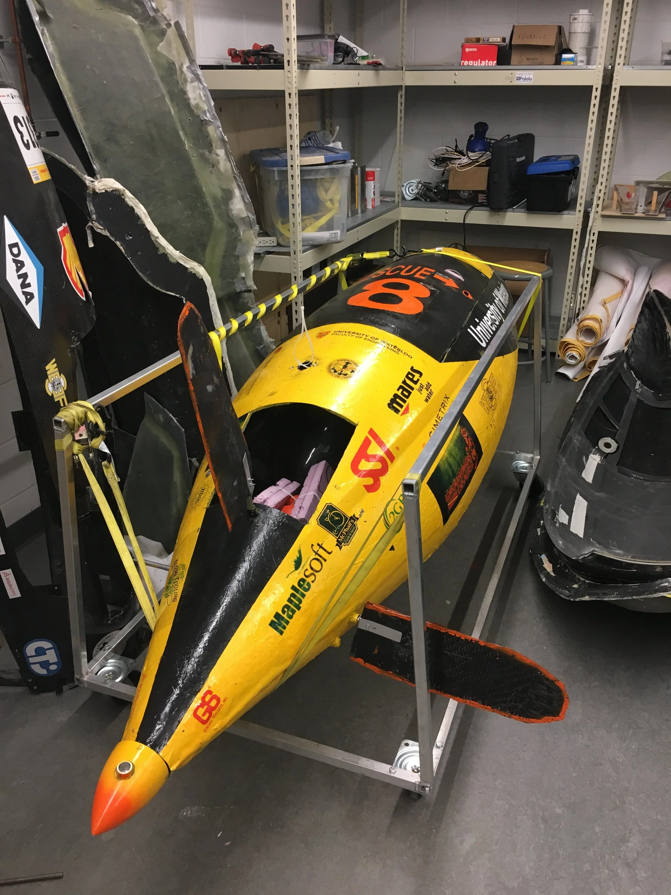